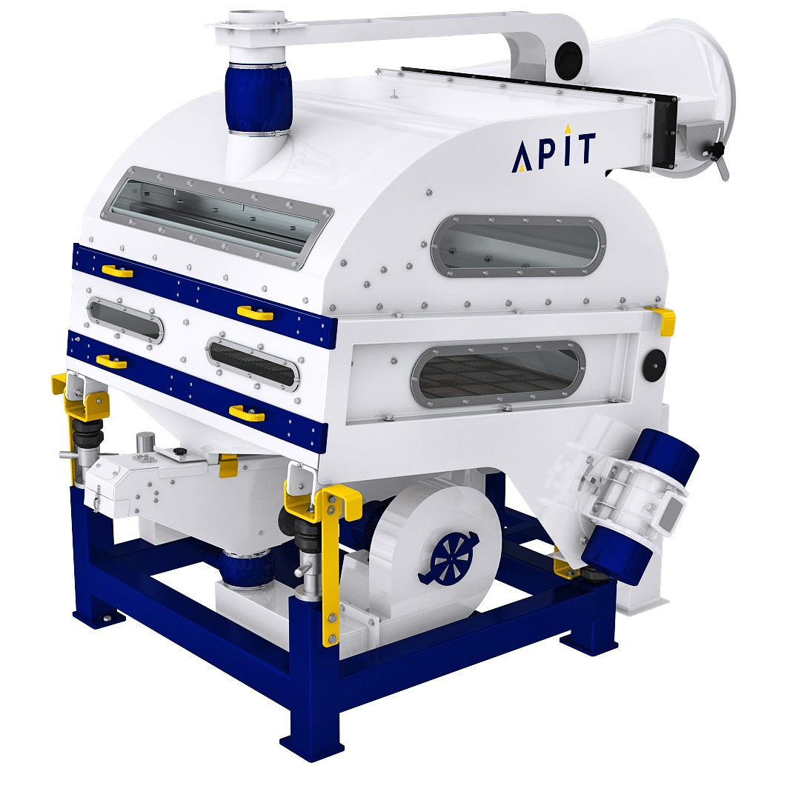
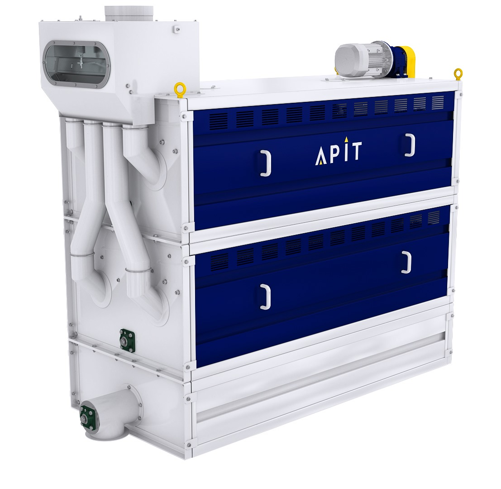
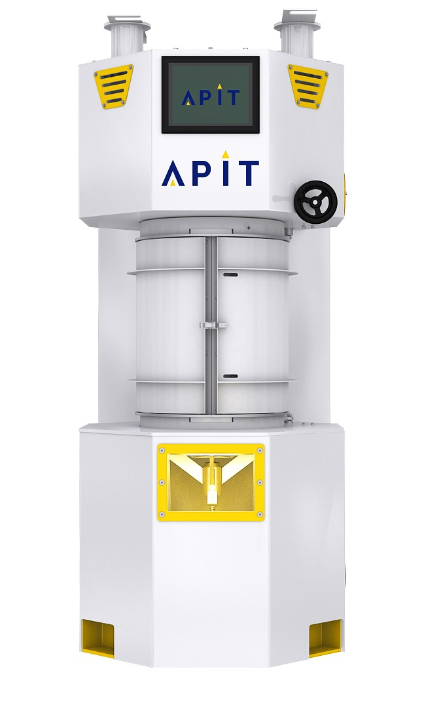
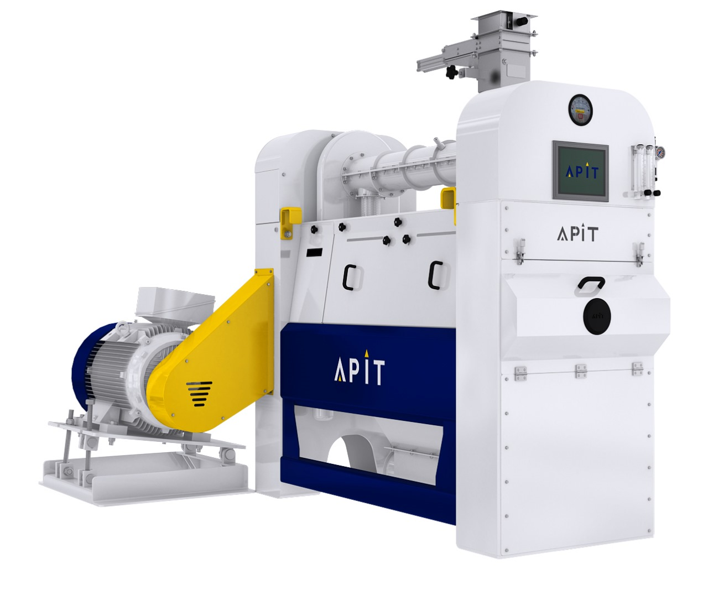
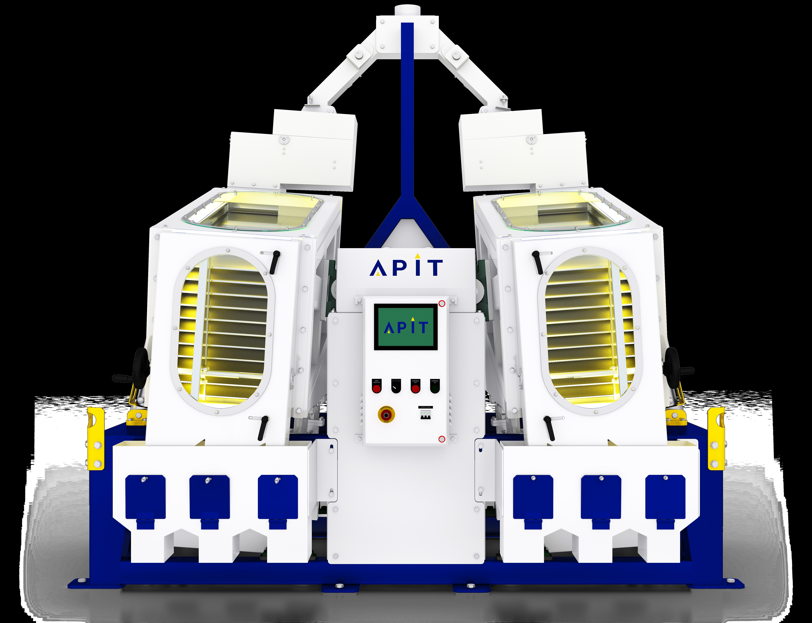

Your mill line, end to end
Built around the machines you already run
TMA sits alongside every stage of the process — a color sorter, a sifter, a husker — and tracks how quality moves through each one.

Stage 01Pre-CleanerRemoves dust, husk & light impurities

Stage 02Stone SorterSeparates stones & dense foreign matter

Stage 03HuskerRemoves the husk from paddy

Stage 04Length GraderSorts grains by length

Stage 05Thickness GraderSeparates thin & thick grains

Stage 06SifterGrades by particle size

Stage 07Colour SorterRemoves discoloured & chalky grains

Stage 08WhitenerRemoves bran layers

Stage 09Silky PolisherFinal polish & shine

Stage 10Tray SeparatorSeparates long & round grains